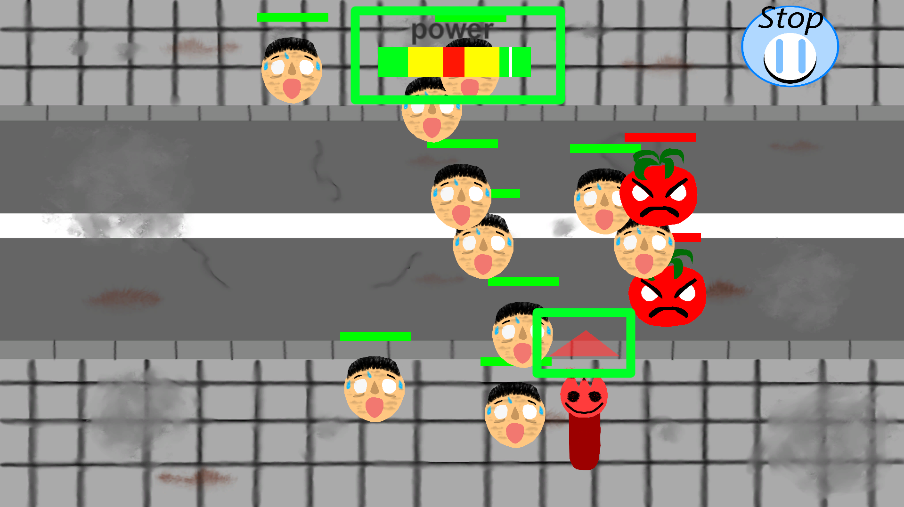

CCG is a 2D action game, created in September 2024 in Germany by 'ptand1133.' It is available on the Microsoft Store.
The game is about evil food that wants to infect people with a virus. The virus can transform people into food. The cutlery is also infected with this virus, but instead of attacking the world, they decide to save it from the evil food.
To start the game, click the left button 'Play,' then click the middle button 'Start.'
To move your character, press W, A, S, or D.
If you want to attack an enemy, press the left mouse button. On the screen, you will see a red arrow above your character and a bar at the top of the screen. The arrow shows the direction your character will attack. You can change the direction by scrolling the middle mouse button. On the bar, you will see a white rectangle that moves left and right. It indicates the power of the attack. When you release the left mouse button, your character will attack in the direction you selected. The power of the attack depends on where the rectangle stops (red zone = most power; green zone = least power; yellow zone = power between the red and green zones).
You need to kill as many enemies as you can. If all the people get infected, you will lose. If you lose, your score and the number of game coins you earned will be displayed. The number of game coins you earn depends on your score.

You can go to the shop, where there are three options: Player Skins, Enemy Skins, and Coins. If you click on 'Player Skins,' you can use your game coins to buy a skin for your character. If you click on 'Enemy Skins,' you can buy skins for your enemies. If you click on 'Coins,' you can purchase additional game coins.